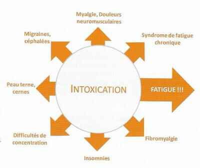
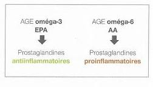

Un Peu de Documentation...
Argent Colloïdal
Je vous présente les podologies de l'argent colloïdale disponible chez votre nutrithérapeute.

Je vous présente les podologies de l'argent colloïdale disponible chez votre nutrithérapeute.
Andrew K. Fletcher est un ingénieur anglais doté d’une grande capacité d’observation et de réflexion.
Précisément, c’est en analysant le principe de circulation de la sève dans les arbres que, par analogie, il se demanda si le fait de dormir horizontalement – et pire, en surélevant les pieds – est véritablement une bonne option pour la santé.
Il a passé les vingt dernières années de sa vie à expérimenter le lit incliné.
Peu de gens sont au départ enclin à admettre cette remise en cause d’une coutume millénaire paraissant totalement physiologique et évidente pour tous.
Et pourtant, le fait qu’il ait obtenu des résorptions de varices en quatre semaines était la preuve évidente de l’opportunité de sa méthode, même si elle désavoue la littérature sur la physiologie médicale.
La sève montante – par capillarité – qui est captée par les racines est en fait composée de 98% d’eau chargée de nutriments.
Quand elle arrive au niveau des feuilles, une évaporation importante s’effectue (on connaît la fraîcheur qu’apportent les arbres et le principe de formation des nuages au-dessus des forêts).
Conséquemment à cette évaporation, la sève se concentre et devient plus dense, donc plus lourde, ce qui la fait redescendre sous l’effet de la pesanteur, nourrissant tout ce qui peut l’être (fruits, branches, tronc, racines)...
A lire: "Le lit incliné pour se soigner..."La maladie de Lyme est une maladie très courante actuellement transmise par des tiques et attaque l'intestin, d'où l'importance de bien s'alimenter...
Notre Organisme est sans répit agressé par un grand nombre de toxines.
L'intoxication de notre organisme crée un terrain fertile pourle développement de maladies dites "de civilisation" touchant de plus en plus de personnes dans le monde.
La détoxication est un processus qui implique demultiples acteurset qui résulte en la transformation par un ensemble deprocessus biochimiques complexes, de substances étrangères oupotentiellement toxiquescomposées de lipophiles ne pouvant pas être éliminées par les urines.
Il existe plusieurs formes d'inflammations pathologiques:
Il faut donc calmer la réponse inflammatoire:
Apporter dans son alimentation ou se supplémanter en acides gras allongés oméga-3, précurseurs des PG3 Anti-inflammatoires.
Soutenir les voies enzymatiques de synthèse des acides gras allongés oméga-3 et oméga-6: Mg, Zn, Vitamines B...
Le Mal de dos est un symptôme caractérisé par une douleur de la région dorsale, le plus souvent basse (lombalgie), parfois plus haut située ou même dorsale moyenne.
L'ambiguïté vient du fait que la douleur est un signe clinique qui peut avoir plusieurs significations qui recouvrent en fait des situations fort diverses.
En langage populaire, le mal de dos est souvent désigné "mal de reins" ou "tour de rein".
Le mal de dos a le plus souvent une origine rachidienne mais des pathologies autres peuvent aussi se manifester par un mal de dos qui peut parfois être trompeur.
Certaines pathologies dégénératives sont provoquées par une mauvaise hygiène de vie: sédentarité, conduite automobile longue et fréquente dans des véhicules équipés de mauvaises suspensions et de mauvais sièges, mauvaise literie (en particulier trop molle), mauvaise posture fréquente (par exemple devant un écran d'ordinateur), mauvaises semelles de chaussure en jogging en particulier dans les descentes.
Elle peut être professionnelle, relative à la posture pendant le travail, telle que les médecins dentistes...
Rétablir une bonne hygiène de vie peut permettre à une pathologie dégénérative d'arrêter d'évoluer, voire de régresser lentement (si ce n'est pas le cas, on s'intéressera aux traitements).
Pendant cette lente régression de la pathologie, on pourra prendre des précautions supplémentaires qui ne sont pas utiles à un individu sain comme le repos physique complet ou l'utilisation de sièges suédois pour lesquels le corps repose autant sur les genoux que sur les fesses et le dos est naturellement droit.
Tandis que la douleur disparaitra, au contraire, on reprendra progressivement les exercices physiques pour remédier à l'atrophie de la musculation et au surpoids provoqués par la sédentarité.
Le traitement doit bien sûr être adapté à la pathologie.
Il dépend du diagnostic, en particulier les instabilités ont des modalités différentes.
Il repose sur le fait que la stabilisation musculaire active contrôle et annule la douleur dans la plupart des cas, même en cas d'atteinte anatomique sévère.
Pour mieux comprendre l'ostéopathie...